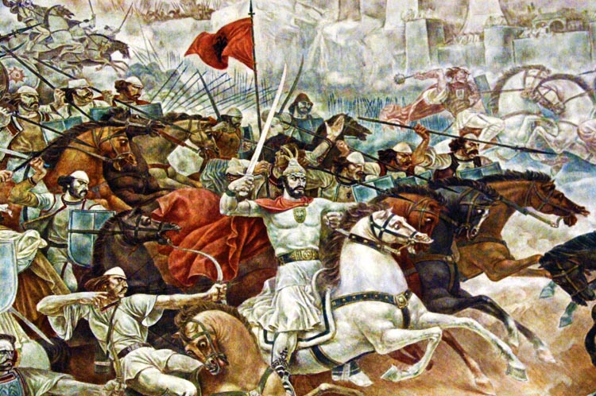
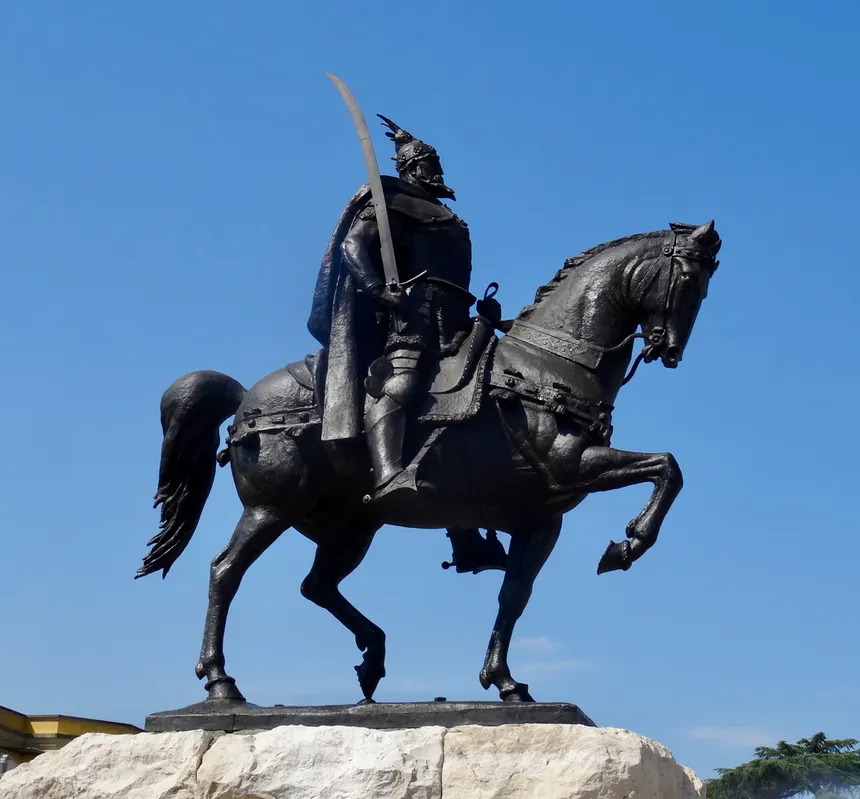

Jeta dhe Rëndësia Historike
Gjergj Kastrioti Skënderbeu (1405-1468) është heroi më i madh i kombit shqiptar. Ai u mor peng nga osmanët në fëmijëri dhe u rrit në oborrin e Sulltanit, por në vitin 1443 ai braktisi Perandorinë Osmane dhe u kthye në Shqipëri, ku bashkoi princërit shqiptarë kundër pushtuesve turq.
- Udhëheqës i qëndresës: Skënderbeu organizoi dhe udhëhoqi me sukses rezistencën shqiptare kundër Perandorisë Osmane për më shumë se dy dekada, duke mbrojtur territorin e Shqipërisë.
- Simbol i unitetit kombëtar: Ai bashkoi princat shqiptarë në Lidhjen e Lezhës, duke u bërë një simbol i fortë i unitetit dhe forcës kombëtare.
- Simbol i unitetit kombëtar: Ai bashkoi princat shqiptarë në Lidhjen e Lezhës, duke u bërë një simbol i fortë i unitetit dhe forcës kombëtare.
- Figura kombëtare: Ai është një hero kombëtar, i cili është një simbol i qëndresës dhe i guximit për popullin shqiptar.

Betejat e Skënderbeut kundër Perandorisë Osmane
Betejat më të famshme
- 1444 - Beteja e Torviollit: Fitorja e parë e madhe kundër osmanëve.
- 1457 - Beteja e Albulenës: Skënderbeu mundi ushtrinë osmane me strategji të shkëlqyer.
- 1466-1467 - Mbrojtja e Krujës: Edhe pse Mehmet Pushtuesi e rrethoi qytetin, ai nuk mundi ta pushtonte.
Trashëgimia dhe ndikimi
Skënderbeu vdiq në vitin 1468, por trashëgimia e tij vazhdoi të frymëzojë shqiptarët për shekuj. Ai është përjetësuar në letërsinë shqiptare, përfshirë veprat e Naim Frashërit, dhe ka qenë një figurë kyçe në identitetin kombëtar shqiptar.

Monumenti i Skënderbeut në Tiranë